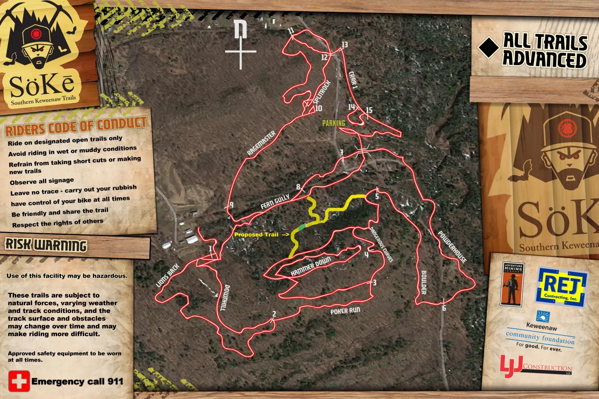

Trails
Mapping the trails is very much a work in progress!
The best map available now can be found on
Trailforks

100% volunteer, made in the USA, hand-built singletrack.
The way mountain biking should be.